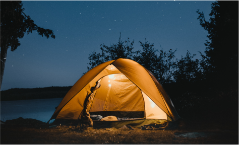

L'Encant d'Acampar al Costat del Llac
Hi ha poques experiències a la vida tan tranquil·les i refrescants com acampar al costat d'un llac. La combinació de la natura en el seu estat més pur amb la calma de les aigües és simplement irresistible. Quan arribes al càmping i plantes la tenda a prop de la riba, la primera cosa que notes és la pau que envolta l'entorn. El lleuger onatge de l'aigua i el suau xiuxiueig del vent entre els arbres et conviden a desconnectar del món i gaudir de cada moment.
"La proximitat de l'aigua aporta una pau que no es troba en cap altre lloc. Despertar amb la vista del llac és una experiència que tots haurien de viure almenys una vegada."
Acampar al costat d'un llac no només ofereix unes vistes espectaculars, sinó que també proporciona una multitud d'activitats per gaudir. Pots començar el dia amb una refrescant banyada a primera hora del matí o fer una passejada amb caiac mentre el sol surt per l'horitzó. La pesca és una altra activitat popular, on pots provar la teva sort i capturar el sopar del dia. A la nit, encén una foguera i gaudeix d'un sopar a l'aire lliure mentre el sol es pon sobre les aigües tranquil·les del llac.
Acampar al costat d'un llac també és ideal per a les famílies. Els nens poden passar hores jugant a la vora de l'aigua, construint castells de sorra o buscant pedres especials. La proximitat a l'aigua també afegeix una dimensió única a l'experiència de càmping, fent que sigui més relaxant i oferint moltes oportunitats per connectar amb la natura.
Per aquells que busquen una experiència de càmping autèntica però còmoda, els càmpings a la vora del llac són l'elecció perfecta. La combinació de la bellesa natural amb la serenitat de l'aigua crea un entorn incomparable, ideal per a aquells que volen desconnectar i gaudir de la natura en estat pur.